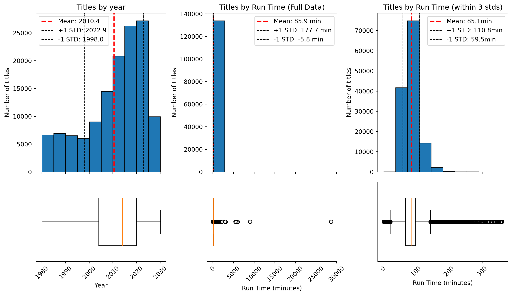
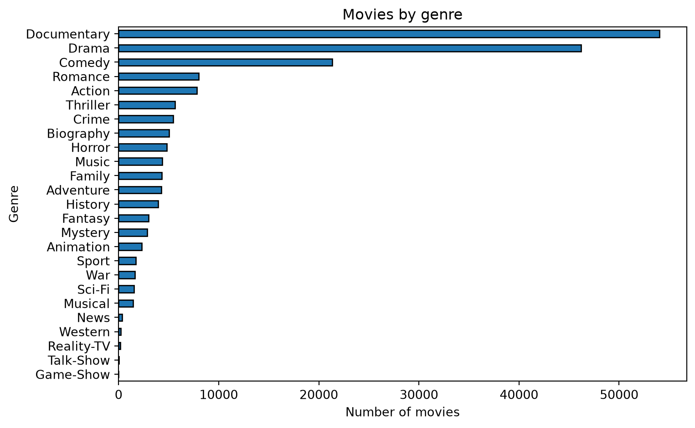
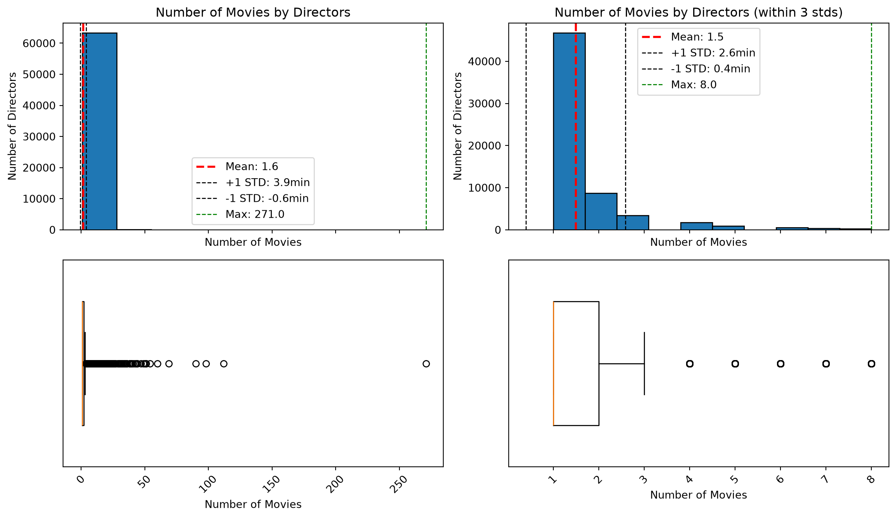
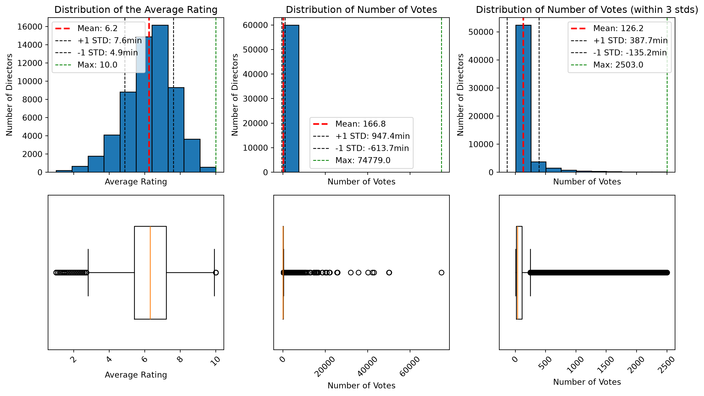
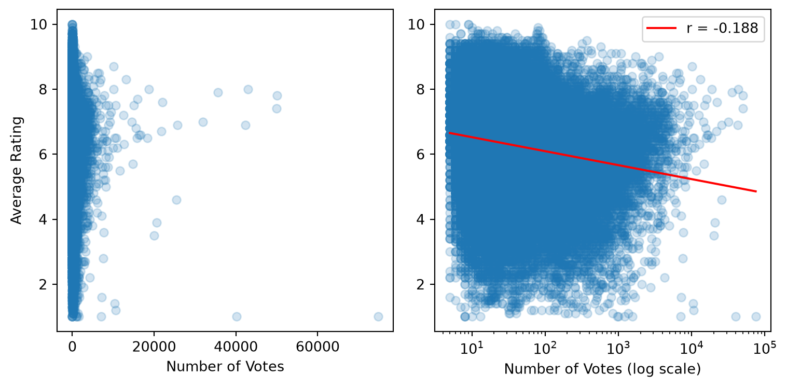
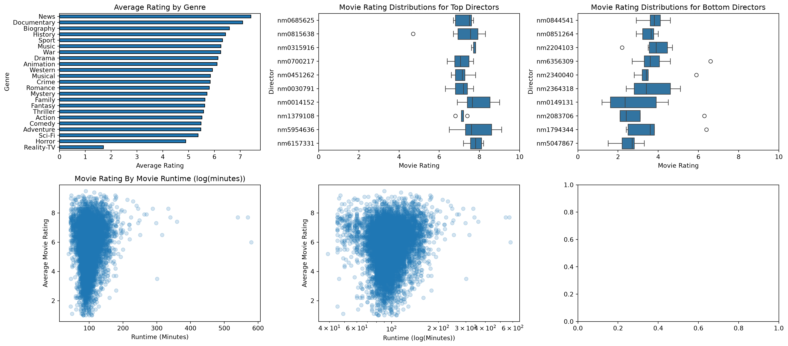

Data Head| titleId | title | |
|---|---|---|
| 0 | tt0000001 | Carmencita |
| 1 | tt0000002 | The Clown and His Dogs |
| 2 | tt0000003 | Poor Pierrot |
| 3 | tt0000005 | Blacksmith Scene |
| 4 | tt0000005 | Blacksmith Scene #1 |
In this project I want to discover what things have an influence on the rating a movie receives on IMDb. I feel this is relevant because I am always looking for a good movie to watch, and I love watching movies.
This data is publicly available through IMDb for free download for non-commercial use. I am, therefore, not worried about using it in a project like this. Because this data is available for free download, no scraping was involved, the bulk of the work was in filter and joining data to get the features I wanted.
The data I collected originated from the four sets listed below.
This contains the names of movies for all the regions it was released in. The columns I’ll use from this dataset are: - titleId (string): A unique alphanumeric identifier - title (string): the localized title - region (string): the region for this version of the title - isOriginalTitle (boolean): 0 if not the original title, 1 if it is the original title
This containts the names of movies and some basic information about the movie. The columns I’ll use from this dataset are: - tconst (string): A unique alphanumeric identifier (primary key) - titleType (string): type or format of the title (differentiating movies from tv shows) - primaryTitle (string): The popular title of the movie - isAdult (boolean): 0 if non-adult title, 1 for adult title - startYear (YYYY): release data of the movie/show - runtimeMinutes: movie runtime - genres (string array): up to three associated genres
This contains the directors and writers of a project. The columns I’ll use from this dataset are: - tconst (string): a unique alphanumeric identifier of movies (primary and foreign key) - directors (array of nconsts): directors of a project - writers (array of nconsts): writers of a project
This contains a rating for every title in the dataset. The columns I’ll use from this dataset are: - tconst (string): unique alphanumeric identifier (primary and foreign key) - averageRating: weighted average of all user ratings - numVotes: number of votes a title has receieved
From these sets I wanted to get movies originating primarily from the US (more relevant for me and my language), movies made after 1980 (more relevant timeline), and movies that had more than average user ratings. The reason for this was so that I was choosing popular movies, even if they were reviewed poorly.
First to start out I read in the titles.aka.tsv. Because the data is so large I filtered it and I’ll read in the filtered data, but include code to read in the original. I filtered the title akas so that it selected all the titles that were not listed as foreign release.
Data Head| titleId | title | |
|---|---|---|
| 0 | tt0000001 | Carmencita |
| 1 | tt0000002 | The Clown and His Dogs |
| 2 | tt0000003 | Poor Pierrot |
| 3 | tt0000005 | Blacksmith Scene |
| 4 | tt0000005 | Blacksmith Scene #1 |
I want to do some filtering to get the projects I want from the title.basics.tsv. I will filter to only titles that are newer than 1980, and then I want to do some EDA on those titles. I’ll combine that with the titles.aka so that it gets primarily US titles.
Data Head| tconst | titleType | primaryTitle | isAdult | startYear | runtimeMinutes | genres | |
|---|---|---|---|---|---|---|---|
| 0 | tt0011801 | movie | Tötet nicht mehr | 0 | 2019 | NaN | Action,Crime |
| 1 | tt0015724 | movie | Dama de noche | 0 | 1993 | 102.0 | Drama,Mystery,Romance |
| 2 | tt0038086 | movie | Shiva und die Galgenblume | 0 | 1993 | NaN | Documentary,Thriller |
| 3 | tt0046976 | movie | Il figlio dell'uomo | 0 | 2000 | NaN | NaN |
| 4 | tt0057461 | movie | La rosa de los vientos | 0 | 1983 | 84.0 | Drama,Fantasy |
I checked the NA values
Rows: 203717
Cols: 7
tconst 0
titleType 0
primaryTitle 0
isAdult 0
startYear 0
runtimeMinutes 58632
genres 24949
dtype: int64And then dropped all the NA values, and checked the new size and outputs.
Rows: 133936
Cols: 7
tconst 0
titleType 0
primaryTitle 0
isAdult 0
startYear 0
runtimeMinutes 0
genres 0
dtype: int64Then I plotted a distribution of the some of the different values.

Then I wanted to see if there were any genre trends.

Note: movies can get assigned multiple genres, so there is double counting happening inherently.
At first glance it looks like the majority of these movies are Documentaries, Dramas, and Comedies. Most of the movies were made more recently (left skewed data). Another interesting component is s a mean of 85.9 minutes, which is lower than I expected.
I’m going to merge the title_crew information with the title.basics information. before I do an inner merge on tconst I’m gonna drop all the na’s. Then I’ll do some plots to see what it all looks like.
Filtered DF
Rows: 5525934
Cols: 3
NA Values
tconst 0
directors 0
writers 0
dtype: int64| tconst | directors | writers | |
|---|---|---|---|
| 0 | tt0000003 | nm0721526 | nm0721526 |
| 1 | tt0000009 | nm0085156 | nm0085156 |
| 2 | tt0000015 | nm0721526 | nm0721526 |
| 3 | tt0000036 | nm0567363 | nm0410331 |
| 4 | tt0000076 | nm0567363 | nm0410331 |
Once I read in and filtered the data I merged the crew and movie titled data.
Rows: 103924
Cols: 9
NA Values
tconst 0
titleType 0
primaryTitle 0
isAdult 0
startYear 0
runtimeMinutes 0
genres 0
directors 0
writers 0
dtype: int64
Data Head| tconst | titleType | primaryTitle | isAdult | startYear | runtimeMinutes | genres | directors | writers | |
|---|---|---|---|---|---|---|---|---|---|
| 0 | tt0015724 | movie | Dama de noche | 0 | 1993 | 102.0 | Drama,Mystery,Romance | nm0529960 | nm0529960,nm1597742 |
| 1 | tt0057461 | movie | La rosa de los vientos | 0 | 1983 | 84.0 | Drama,Fantasy | nm0350099 | nm1104994,nm0350099,nm0489739 |
| 2 | tt0065108 | movie | Tolko tri nochi | 0 | 1989 | 82.0 | Drama,Romance | nm0947248 | nm0097469 |
| 3 | tt0065188 | movie | Vojtech, receny sirotek | 0 | 1990 | 80.0 | Drama | nm0878702 | nm0434141,nm0815785,nm0878702 |
| 4 | tt0065530 | movie | Le cercle des passions | 0 | 1983 | 108.0 | Drama | nm0195327 | nm0094669,nm0379586,nm0195327 |
Once I merged the datasets I did some EDA through different plots.

It looks like most of the directors have made an average of 1.6 movies, which is lower than I expected, but the max was 271 movies by one director, which is much higher than I thought. It will be interesting to see where the spread lands after filtering based on reviews and actors.
Now I want to read in the title ratings, and try to match that with director information.
Filtered DF
Rows: 103924
Cols: 9
Data Head| tconst | averageRating | numVotes | |
|---|---|---|---|
| 0 | tt0015724 | 6.2 | 35 |
| 1 | tt0057461 | 4.7 | 30 |
| 2 | tt0065108 | 6.8 | 34 |
| 3 | tt0065188 | 6.5 | 44 |
| 4 | tt0065530 | 6.3 | 83 |
I did some EDA plots on movie ratings.

What this tells me, is that the average rating is much more normally distributed (slight left skew) than any of the other values in this dataset, which is generally what I would expect. On average, a movie gets rated slightly above the random average (5 out of 10), and leans more upward (which makes sense because movies are supposed to be good). Another interesting part of this is the number of votes films are getting. It makes me curious to see if there is any impact on numVotes and the average rating.

There doesn’t seem to be much of a relationship between the number of votes and the average rating. Because numVotes is so right skewed I used a log transform, and still only got an r-value of -0.188, which is very weak.
I want to merge the ratings data with the rest of the movie data and see if we can learn anything from the movie data. Before I merge the last I want get movies that have more votes than the average (to make sure it’s gets the more popular/relevant movies).
Before Votes Filter
Rows: 60026
Cols: 3
After Votes Filter
Rows: 13777
Cols: 3
After Merge
Rows: 13777
Cols: 11| tconst | titleType | primaryTitle | isAdult | startYear | runtimeMinutes | genres | directors | writers | averageRating | numVotes | |
|---|---|---|---|---|---|---|---|---|---|---|---|
| 0 | tt0066151 | movie | Ninja Destroyer | 0 | 1986 | 92.0 | Action,Adventure | nm0061792 | nm0007554,nm0061792 | 3.7 | 129 |
| 1 | tt0075211 | movie | Shocking Asia II: The Last Taboos | 0 | 1985 | 90.0 | Documentary,Horror | nm0288975 | nm0288975 | 4.9 | 303 |
| 2 | tt0078791 | movie | Aquella casa en las afueras | 0 | 1980 | 95.0 | Horror,Thriller | nm0554632 | nm0161728,nm0191186,nm0554632,nm0559120,nm0838... | 5.7 | 227 |
| 3 | tt0078799 | movie | Artista, dolarii si Ardelenii | 0 | 1980 | 74.0 | Drama,Western | nm0894758 | nm0691489 | 7.3 | 502 |
| 4 | tt0078853 | movie | Carnapping | 0 | 1980 | 89.0 | Comedy,Crime | nm0926872 | nm0237252,nm4864364,nm0926872 | 6.1 | 338 |
Now that I have a final result, I want to see if there is any discernable relationship between different movie characteristics and their average rating.

The most visually interesting result (to me) is that the top directors have a tight clusters in their movie ratings than the bottom rated directors.